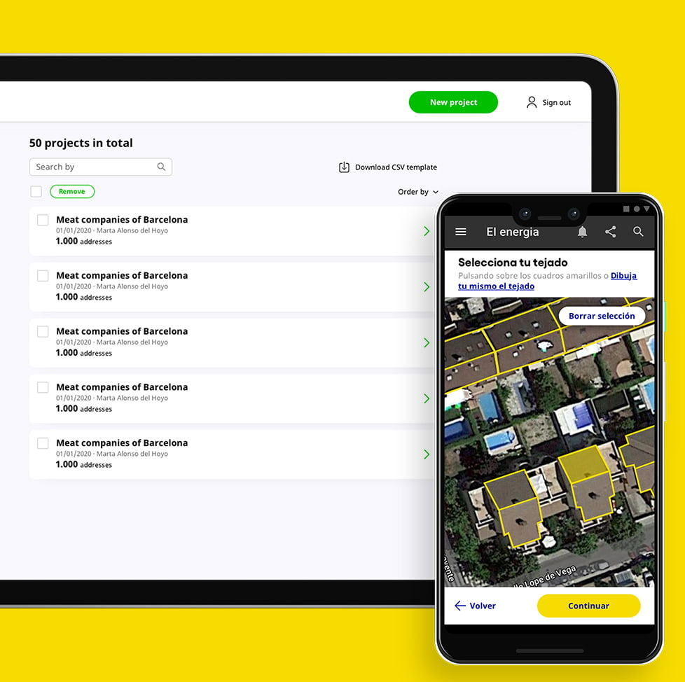

Descripción del proyecto
ei Energia Independiente
ei Energía Independiente es una nueva spin-off focalizada en las energías descentralizadas, participada al 100% por Galp (la mayor compañía energética de nuestro vecino luso). Actualmente, aporta soluciones fotovoltaicas en España y Portugal, tanto para empresas como para particulares. ei Energía Independiente es una nueva spin-off focalizada en las energías descentralizadas, participada al 100% por Galp (la mayor compañía energética de nuestro vecino luso). Actualmente, aporta soluciones fotovoltaicas en España y Portugal, tanto para empresas como para particulares.
El reto
Definir y construir las bases tecnológicas alineadas con la cultura de la compañía.
Cuando participas en el nacimiento de una compañía no puedes dar nada por hecho, todo parte de cero, y más en la situación en la que nos incorporamos en medio del confinamiento por el COVID19 (abril 2020). Son necesarias muchas cosas para tener los mínimos de cara a poder hacer el lanzamiento de una nueva empresa: aspectos legales, financieros, operativos, culturales, tecnológicos y de negocio. Desde un primer momento, ei ha apostado totalmente por la tecnología, un mindset experimental, la transparencia y la innovación. En las fases iniciales, nos propusieron el reto de definir y construir la arquitectura tecnológica conjuntamente. Buscábamos un stack potente, actualizado y atractivo, sentar las bases de cara a un desarrollo software de calidad y tener un sistema escalable basado en el cloud y bajo un mindset devops. No sólo eso, teníamos que construir los MVPs necesarios para el lanzamiento de la compañía y colaborar en la creación y adopción de procesos, metodologías y equipos humanos. Y con un primer gran hito en mente: en junio de 2020 haríamos el soft launch de ei.
La solución
Crear sistemas core mediante APIs usando metodologías ágiles y conceptos lean para fomentar el desarrollo multiproducto.
Se ha creado una arquitectura propia llamada Hedy, que es capaz de ingerir un gran volumen de información y procesarlo, además de orquestar como APIs en distintos procesos independientemente del canal que se esté usando dependiendo de su funcionalidad. La construcción y uso de Hedy ha sido un factor determinante para poder mejorar el time-to-market, utilizándose en grueso de las aplicaciones core de ei. Se han utilizado metodologías ágiles y principios lean lo que nos ha permitido validar nuestras hipótesis y adaptar los productos tecnológicos en base al feedback de los primeros clientes reales. Por otra parte, también colaboramos en la creación de la cultura de empresa: ha sido muy motivador trabajar tan mano a mano con ei, con unos valores de ambas empresas totalmente alineados y un equipo humano totalmente motivado y colaborativo. Esto nos ha permitido ir formando equipos de desarrollo mixtos en los que todos se sienten parte de ei.
Resultados
Flexibilidad para la construcción simultánea de productos digitales con ciclos cortos de entrega de valor.
8 meses más tarde, estamos orgullosos de contar el camino que hemos recorrido juntos y cómo ei se ha convertido en uno de los principales actores de su sector. Hemos sentado las bases tecnológicas y metodológicas de ei, resultando en una forma de trabajar con la que nos sentimos cómodos y que además funciona estupendamente. Se han formado 4 equipos de desarrollo plenamente operativos y autónomos, cuyo objetivo no es dar servicio a negocio y producto, sino co-crear con ellos. Y no menos importante, hemos puesto la tecnología al servicio de ei, para poder ofrecer a sus clientes las mejores soluciones fotovoltaicas con un proceso sencillo, generando una propuesta de valor clara, precisa y fiable. Valor para cliente, para ei y para el planeta, sustentado en un modelo de negocio escalable, sostenible y que da un paso adelante en la transición energética.